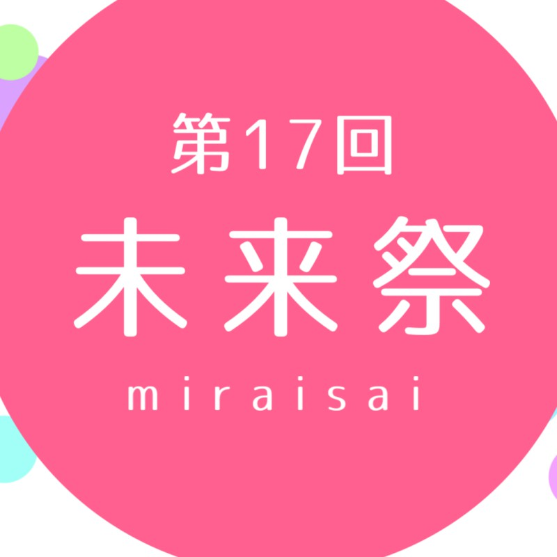
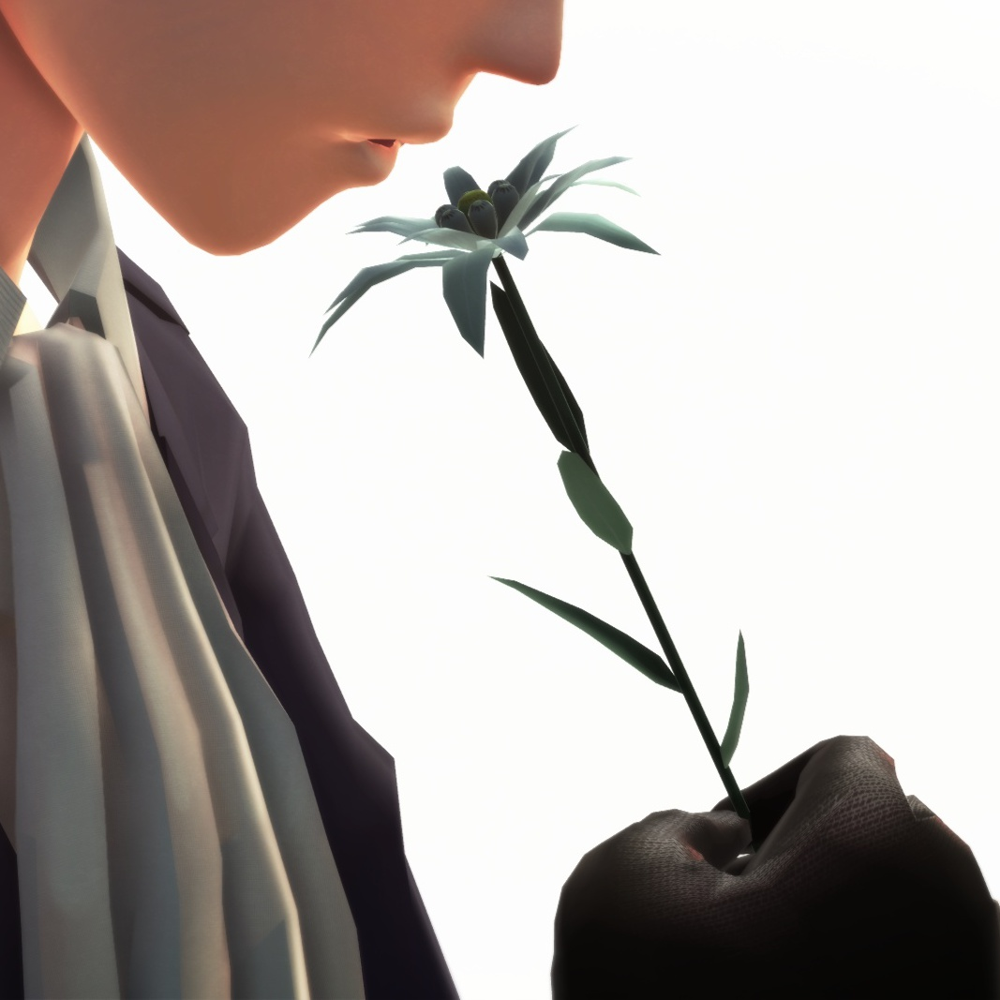
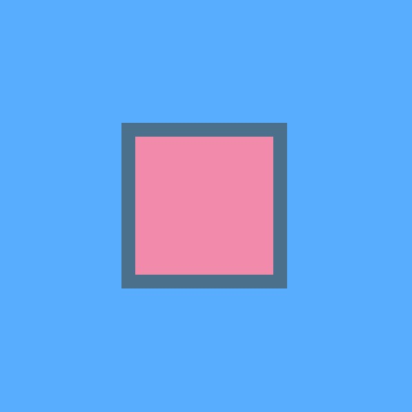
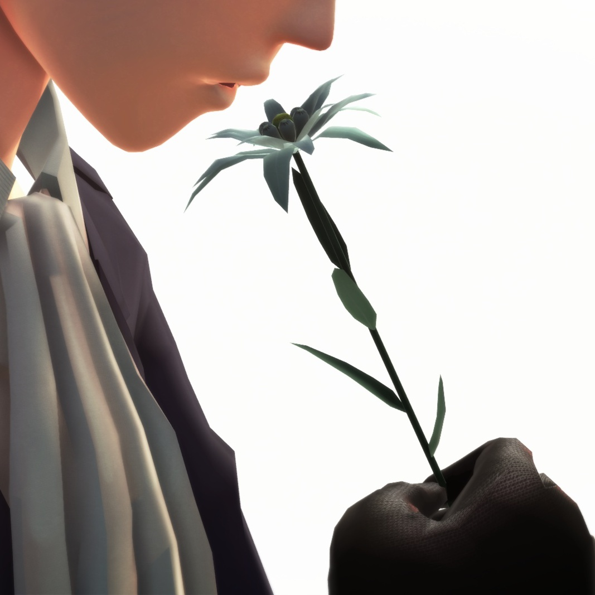
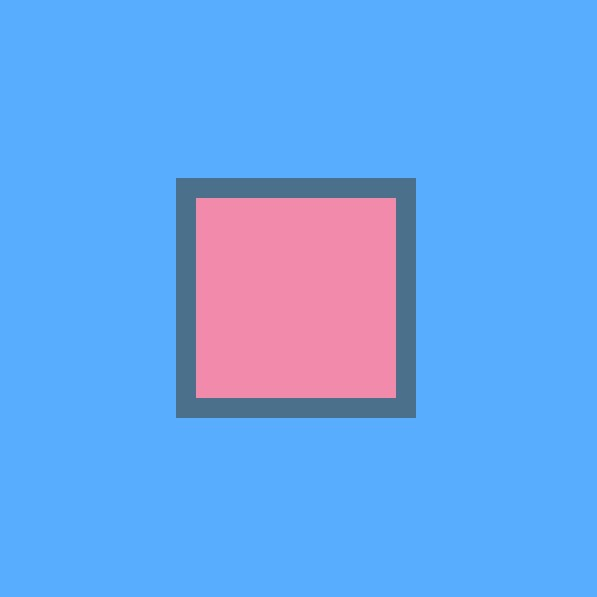

Profile

| 名前 | mokomoka |
| 誕生日 | 1997.**.** |
| 趣味 | お絵かきと動画編集 |
| マイブーム | M.S.S Project |
| 情報系に興味を 持ったきっかけ | 昔ゲームが好きだったことと、 MSSPの動画で動画投稿サイトに興味をもったこと |
| 名前 | mokomoka |
| 誕生日 | 1997.**.** |
| 趣味 | お絵かきと動画編集 |
| マイブーム | M.S.S Project |
| 情報系に興味を 持ったきっかけ | 昔ゲームが好きだったことと、 MSSPの動画で動画投稿サイトに興味をもったこと |
つくったものです。作成日もジャンルもバラバラ。
 



いろんなアカウントを持っていますが、とりあえず必要そうなものだけ載せておきます。